통신선로산업기사 (2003-03-16 기출문제)
1과목: 디지털전자회로
1. 증폭이득이 60[dB]인 증폭기에서 20[%]의 찌그러짐이 발생했다. 이것을 2[%] 이내로 개선하기 위해서 걸어야 할부궤환은?
- 10[dB]
- 20[dB]
- 30[dB]
- 40[dB]
(정답률: 알수없음)

2. 브리지 정류회로에서 교류 220[V]를 정류시킬 때 최대전압은 약 몇[V] 인가?
- 140
- 311
- 432
- 180
(정답률: 알수없음)
3. 반가산기(Half-adder)의 구성 요소로 맞는 것은?
- JK 플립플롭
- 두개의 AND 게이트
- EOR과 AND 게이트
- 1개의 반동시 회로와 OR 게이트
(정답률: 알수없음)
4. 그림과 같은 발진회로의 적합한 발진조건과 회로명은?
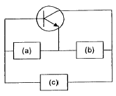
- (a)유도성, (b)용량성, (c)용량성 회로명: 콜피츠 발진회로
- (a)용량성, (b)유도성, (c)용량성 회로명: 콜피츠 발진회로
- (a)유도성, (b)용량성, (c)유도성 회로명: 하틀리 발진회로
- (a)유도성, (b)유도성, (c)용량성 회로명: 하틀리 발진회로
(정답률: 알수없음)
5. 그림과 같은 연산증폭기의 출력 전압 Vo는?
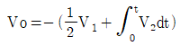
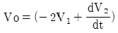
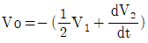
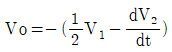
(정답률: 알수없음)
6. 그림의 증폭 회로에서 S를 단락 시켰을 경우에도 그 값의 변화가 거의 없는 것은 어느 것인가? (단, Re+R1 ≪ 1/hoe)
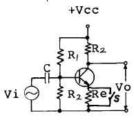
- 증폭기의 입력 저항
- 증폭기의 안정도
- 증폭기의 전류 이득
- 증폭기의 전압 이득
(정답률: 알수없음)
7. 베이스 변조회로에 대한 설명으로 틀리는 것은?
- 변조에 필요한 전력이 적다.
- 출력에 불필요한 고조파가 생겨 효율이 저하한다.
- 변조회로의 트랜지스터를 C급으로 바이어스 한다.
- 저출력의 변조도가 작은 경우에 사용한다.
(정답률: 알수없음)
8. 논리식
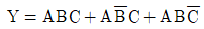
를 가장 간단히 한 것은?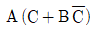
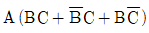
- A(B+C)
- ABC
(정답률: 알수없음)
9. 다음 부울식을 간소화 할 때 맞는 것은?
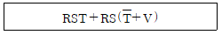
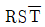
- RSV
- RST
- RS
(정답률: 알수없음)
10. 아래에 열거한 항목 중에서 트랜지스터 CE(공통 이미터)증폭기의 입력전압, 입력전류, 출력전압, 출력전류를 올바르게 표시한 항은?
- ① 입력전압 : VBC, ② 입력전류 : IB, ③ 출력전압: VEC, ④ 출력전류 : IE
- ① 입력전압 : VEB, ② 입력전류 : IE, ③ 출력전압: VCB, ④ 출력전류 : IC
- ① 입력전압 : VEB, ② 입력전류 : IB, ③ 출력전압: VEC, ④ 출력전류 : IC
- ① 입력전압 : VBE, ② 입력전류 : IB, ③ 출력전압: VCE, ④ 출력전류 : IC
(정답률: 알수없음)
11. J-K 플립-플롭은 두개의 입력 데이터에 의하여 출력에서 몇개의 조합을 얻을수 있는가?
- 2
- 4
- 8
- ∞
(정답률: 알수없음)
12. 여러 개의 입력 신호 가운데 하나를 선택하여 출력하는 동작을 하는 것은?
- 인코더
- 멀티플렉서
- 디멀티플렉서
- 페리티 체크회로
(정답률: 알수없음)
13. 그림과 같이 증폭기를 3단 접속하여 첫단의 증폭기 A1에 입력전압으로 2[㎶]인 전압을 가했을때 종단증폭기 A3의 출력전압은 몇[V]가 되는가? (단, A1, A2, A3의 전압이득 G1, G2, G3는 각각 60[㏈], 20[㏈], 40[㏈]이다.)
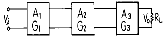
- 20[V]
- 2[V]
- 0.2[V]
- 20[㎷]
(정답률: 알수없음)
14. FM 검파회로로서 사용되지 않는 회로는?
- PLL 검파
- Ratio 검파
- Foster-seeley형 검파
- Collector 검파
(정답률: 알수없음)
15. 트랜지스터의 베이스접지 전류증폭률을 α 라 하면 이미터 접지의 전류증폭률 β 는 어떻게 표시되는가?
- β =α/α +1
- β =α/1-α
- β =α -1/α
- β =α +1/α
(정답률: 알수없음)
16. 접합 트랜지스터의 스읫칭 속도를 빠르게 하기위한 방법으로 적당한 것은?
- 베이스 회로에 직열로 저항을 접속한다.
- 베이스 회로에 인덕턴스를 접속한다.
- 베이스 회로에 저항과 콘덴서를 병열 접속하여 연결한다.
- 베이스 회로에 제너 다이오드를 접속한다.
(정답률: 알수없음)
17. 쌍안정 멀티바이브레이터의 결합저항에 병렬로 부가한 콘덴서의 사용 목적은?
- 증폭도를 높인다.
- 스위칭 속도를 높인다.
- 베이스 전위를 일정하게 유지시킨다.
- 에미터 전위를 일정하게 유지시킨다.
(정답률: 알수없음)
18. 그림의 논리회로는 어떤 논리작용을 하는가?
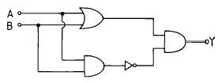
- AND
- OR
- NAND
- Exclusive OR
(정답률: 알수없음)
19. DC 결합과 AC 결합이 함께 사용되는 회로는?
- 비안정 멀티바이브레이터
- 단안정 멀티바이브레이터
- 쌍안정 멀티바이브레이터
- 블로킹 발진기
(정답률: 알수없음)
20. 그레이코드 101101을 2진수로 변환하면?
- 110110
- 111011
- 011011
- 111101
(정답률: 알수없음)
2과목: 유선통신기기
21. 케이블 고장 종류의 파형을 측정한 후 반사파형의 특징을 설명한 것이다, 맞게 짝 지워진 것은?
- 혼선(단락)고장 : 같은극성과 반대극성 파형이 연속되고 곡선의 끝이 둔함
- 침수고장 : 송출 신호와 반대 극성이고 곡선의 끝이 예리함
- 누화 고장 : 같은극성과 반대극성 파형이 먼간격으연속되고 곡선의 끝이 둔함
- 단선(개방)고장 : 송출 신호와 같은 극성이고 곡선의 끝이 둔함
(정답률: 알수없음)
22. 교환기의 용량중의 하나인 통화로계 트래픽 처리능력을 결정하는데 가장 직접적인 영향을 미치는 것은?
- 제어계 구조
- 중계선 접속형태
- 스위치 규모
- 가입자형태
(정답률: 알수없음)
23. 전자교환기등에서 활용되는 MFC(multi frequency code)전화기의 특성 설명으로 틀린 것은?
- 주파수 발진회로를 내장하고 있다.
- 1개의 숫자나 기호는 임펄스 대신 종횡 2개의 주파수가 대응된다.
- 저군주파수는 697,770,852,941[㎐]를 사용한다.
- 고군주파수는 1209,1356,1447,1663[㎐]를 사용한다.
(정답률: 알수없음)
24. 50회선의 중계선에 가해진 호량이 40[Erl]이고, 호손율이 1/8일때 이 중계선의 회선 효율은 얼마 인가?
- 10[%]
- 30[%]
- 50[%]
- 70[%]
(정답률: 알수없음)
25. 가정에서 사용하는 무선전화기에 대한 설명중 틀린 것은?
- 무선 전화기는 고정 장치와 이동 장치로 구성 되어 있다.
- 주파수 공용 방식을 사용하여 가장 깨끗한 채널을 선택하여 사용 할 수가 있다.
- 통화 방식은 단신 방식이며 사용 주파수 대는 46.510-46.970[MHz]와 46.695-46.970[MHz]을 각각 사용한다.
- 전화 번호를 기억 시키는 메모리 기능과 잡음 제거회로가 내장 되어 있다.
(정답률: 알수없음)
26. 다음 그림과 같은 다중화 시스템에서 ①과 ②에 포함되어야 할 장치는?
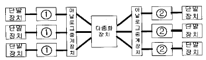
- ① MODEM, ② DSU
- ① MODEM, ② MODEM
- ① DSU, ② DSU
- ① DSU, ② MODEM
(정답률: 알수없음)
27. 자동교환기의 스위치 계산의 기초가 되는 최번시 호량을 Unit call[UC]로 표시하면?
- 최번시호수 × 호의평균 보류시간(초)
- 최번시호수 × 호의평균 보류시간(초) × 1/100
- 최번시호수 × 호의평균 보류시간(초) × 1/60
- 최번시호수 × 호의평균 보류시간(초) × 1/3,600
(정답률: 알수없음)
28. PCM-24방식은 24개의 음성채널을 아래의 종류 중에서 어떤 다중화 방식으로 다중화하는가?
- FDM
- TDM
- WDM
- CDM
(정답률: 알수없음)
29. 광섬유의 전송특성 중 전송 손실에 대한 설명 중 틀린 것은?
- 산란손실 : 빛이 파장 크기정도의 알갱이에 닿을 때 여러 방향으로 산란되기 때문에 생기는 손실
- 흡수 손실 : 광섬유에 포함된 여러 가지 불순물에 의한 흡수로 광출력이 열로 유실되는 현상
- 구조 불안정에 의한 손실 : 구조의 불안정에 의해 모드 변환이 발생하여 도파 에너지의 일부가 코어 밖으로 방사되는 현상
- 마이크로벤딩 손실 : 광섬유의 파장의 변화에 따라 발생하는 에너지의 상쇄 현상
(정답률: 알수없음)
30. 아날로그형 피측정량의 디지틀 측정시 발생하는 잡음중 레벨수가 작아서 가장 큰 영향을 받는 잡음은?
- 지터 잡음(Jitter Noise)
- 가우스 잡음(Gaussian Noise)
- 양자화 잡음(Quantization Noise)
- 표본화 잡음(Sampling Noise)
(정답률: 알수없음)
31. 팩시밀리에서 주사선 밀도가 크면?
- 동기를 맞추기 쉽다.
- 수신화가 선명하다.
- 누화가 적다.
- 전송시간이 줄어든다.
(정답률: 알수없음)
32. ATM교환은 정보를 셀로 나누어 전송한다. 셀의 구성은 헤더와 사용자 정보영역으로 나뉘는데 각 할당 바이트 수로 맞는 것은?
- 7, 48
- 8, 53
- 5, 48
- 6, 53
(정답률: 알수없음)
33. 동작/대기 리던던시 구조 중에 동작/대기 양 쪽이 동기적으로 기능을 수행하는 방식은?
- 콜드-스탠바이(cold-standby)
- 핫-스탠바이(hot-standby)
- 웜-스탠바이(warm-standby)
- 예비쌍 형태(Pair-and-spare)
(정답률: 알수없음)
34. TDX-10에서 프로세서간 통신을 수행하는 장치는?
- CDL
- CI
- LSI
- TSL
(정답률: 알수없음)
35. 다음중 PCM 신호 재생중계 기능에 해당하지 않는 것은?
- 등화(Equalization)
- 타이밍(Timing)
- 재생(Regeneration)
- 증폭(Amplitude)
(정답률: 알수없음)
36. 서로 10[m]이상 떨어진 ABC의 3개소 접지판의 접지저항을 측정하기 위하여 코올라우시 브리지로 측정했더니 AB 간의 저항은 18[Ω], BC 간의 저항은 14[Ω], CA 간은 10[Ω]이었다. A의 접지저항은 얼마인가?
- 3[Ω]
- 7[Ω]
- 11[Ω]
- 15[Ω]
(정답률: 알수없음)
37. 전화 교환기에서 발신 전화기로 보내는 가청음 신호가 아닌 것은?
- 발신음
- 호출음
- 폭주 신호
- 숫자 정보 신호
(정답률: 알수없음)
38. 전자교환기에서 사용하는 축척 프로그램 제어(SPC)의 설명이 맞지 않는 것은?
- 가입자에 대한 다양한 기능 부여
- 고도의 신뢰성
- 시설비의 저렴
- 중앙제어 장치의 증대
(정답률: 알수없음)
39. 다음과 같은 모뎀의 표시 램프가 점등되는 경우에 대한 설명 중 틀린 것은?
- RD : 데이터를 수신할 때 점등된다.
- TR : 모뎀에 단말기가 접속되어 있을 때 점등된다.
- CD : 모뎀이 단말기로부터 데이터를 받을 때 점등된다.
- MR : 모뎀이 데이터를 송수신할 준비가 되어 있을때 점등된다.
(정답률: 알수없음)
40. 가입자 단말장치인 컨버터의 조건에 해당하지 않는 것은?
- 인접채널 전송 시 방해를 주지 말아야 한다.
- 입력단자 국부발진 누설이 적어야 한다.
- 직접파의 영향을 최소화하여야 한다.
- 가능한 소형화하여야 한다.
(정답률: 알수없음)
3과목: 전송선로개론
41. 싱글모드 광섬유케이블의 설명으로 틀린 것은?
- 케이블 인장선이 삽입되어 있다.
- 클래딩의 직경은 약 125㎛이다.
- 코어의 직경은 약 50㎛이다.
- 광섬유의 클래드 표면은 코팅되어 있다.
(정답률: 알수없음)
42. 케이블 내부에 질소가스를 봉입하여 사용하는 케이블은?
- CCP-SS 케이블
- UTP 케이블
- FS 케이블
- 동축 케이블
(정답률: 알수없음)
43. 2선식 회선의 특징이 아닌것은?
- 중계소 단(端)에 있어서는 전송 레벨차에 의한 누화가 생기기 쉽다.
- 반향이 생기기 쉽다.
- 전송 세력을 증폭하기가 용이하다.
- 반이중 혹은 전이중 통신 방식이 가능하다.
(정답률: 알수없음)
44. 코어의 굴절율이 2, 크래드의 굴절율이 1인 광섬유 케이블 내에서 전반사가 이루어지는 입사광선의 임계각도(臨界角度)는?
- 최저 30° 이상
- 최저 45° 이상
- 최저 60° 이상
- 최저 80° 이상
(정답률: 알수없음)
45. 관로시설중 지하선로와 가공선로를 연결 또는 배선하기 위하여 사용하는 관로는?
- 분기관로
- 인상 분선관로
- 인입관로
- 배선관로
(정답률: 알수없음)
46. 그림은 케이블 선로의 임피던스 부정합을 나타낸 것이다. 이 경우에 반사파의 파형으로 옳은 것은?
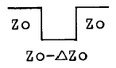
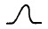
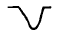
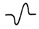
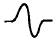
(정답률: 알수없음)
47. 표본화 주파수가 규정치보다 낮아질 때 일어나는 현상은?
- 통화의 명료
- 원 신호 스펙트럼 분리
- 표본화 잡음의 증가
- S/N의 저하
(정답률: 알수없음)
48. 광섬유의 고유손실 원인에 해당되지 않는것은?
- 레일리 산란손실
- 전자천이 흡수손실
- 분자진동 흡수손실
- 마이크로 밴딩손실
(정답률: 알수없음)
49. 시내전화 케이블을 습기로부터 침입을 방지하기 위한 방법 중 적합하지 않은 방법은?
- 케이블 제조 시 심선 사이에 절연이 양호한 젤리를 충진하여 습기로부터 예방한다.
- 케이블의 청결을 위하여 매년 정기적으로 인,수공 및 케이블 외피를 청소한다.
- 케이블에 건조공기를 불어넣는다.
- 케이블에 질소깨스를 불어넣는다.
(정답률: 알수없음)
50. 케이블 심선구조에서 2선의 심선을 1개의 단위로 구성한 것을 무엇이라 하는가?
- 쿼드(quad)
- 페어(pair)
- 연정(pitch)
- 코어(core)
(정답률: 알수없음)
51. 시내 케이블의 심선 접속방식중 분기 접속법은 그 모양에 따라 구분하는데 이에 해당되는 것은?
- V형
- V형, T형
- V형, T형, Y형
- V형, T형, Y형, +형
(정답률: 알수없음)
52. 대칭 케이블의 전송 대역에서 상한 주파수의 사용을 제한하는 이유 중 가장 중요한 것은?
- 온도변동에 따른 손실의 급격한 변동
- 잡음대역의 증가에 따른 S/N비 변동
- 누화특성의 불량
- 증폭기 대역의 증가에 따른 명음의 발생
(정답률: 알수없음)
53. 분포정수 회로의 위상정수에 대하여 설명한 것 중 가장 관계가 먼 것을 고르시오?
- 위상정수는 신호파의 통화전류가 1[km]의 전송로를 흐르는데 어떠한 속도로 전파되는 가를 [θ]로 표시한 값을 의미한다.
- 극히 낮은 주파수와 높은 주파수에서는 위상정수 값이 사용주파수에 정비례하므로 위상왜곡이 없다.
- 음성주파수에서는 주파수에 정비례하지 않으므로 위상왜곡이 발생한다.
- 전화 케이블에서 사용주파수가 높아지면 신호전류의 전달속도가 늦어진다.
(정답률: 알수없음)
54. 보통의 전송선로에서는 전송된 파형의 일그러짐이 생기는데 이러한 전송선로에서의 일반적인 전송특성은 어떤 것인지 옳은 것은?
- RC < LG
- RL > CG
- RC > LG
- RL < CG
(정답률: 알수없음)
55. 신호펄스가 어느 통신선로(동선)를 통해서 전송될 경우 고주파 성분의 펄스는 저주파 성분의 펄스에 비교해서 감쇠의곡 상태는 어떠한가?
- 고주파 성분쪽이 더 심하다.
- 저주파 성분쪽이 더 심하다.
- 고주파 성분쪽과 저주파 성분쪽의 감쇠의곡은 동일하다.
- 주파수에 관계 없이 항상 일정하다.
(정답률: 알수없음)
56. 광섬유에서 재료분산(Ｍ)은 파장에 따른 굴절율의 변화에 기인된다. λ = 파장,ｃ = 빛의 속도라 할때 재료분산(Ｍ)을 올바르게 나타낸 식은? (단,ｎ은 굴절률)
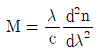
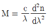
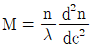
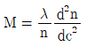
(정답률: 알수없음)
57. 전기통신설비의 분계점에 대한 설명중 옳지 않은 것은?
- 분계점에서 전화국측은 통신사업자가, 분계점에서 단말기측으로는 건물주(또는 이용자)가 전기통신설비의 건설과 보전의 책임을 진다.
- 일반적으로 인입관로 및 인입케이블의 분계점은 이용자의 혼동을 피하기 위하여 대지경계로 규정하고 있다.
- 분계점에는 이용자의 망접속장치로 주단자함이나 주배선반을 설치한다.
- 단독주택은 분계점에 보호기가 내장된 세대단자함을 주단자함 대신에 설치한다.
(정답률: 알수없음)
58. 폼 스킨(foam skin) 케이블의 절연방법은?
- 공기발포층이 있는 PEF로 절연한다.
- 절연용 기름종이와 PVC재질을 혼합 사용한다.
- 절연이 우수한 PVC 재질을 사용한다.
- 절연이 우수한 PEF 재질만으로 사용한다.
(정답률: 알수없음)
59. 다음 중 통신선이 전력선 등으로부터 유도방해를 받았을 때의 현상(영향)이라고 보기 어려운 것은?
- 전송손실치의 급격한 감소
- 인체,기기에 대한 위험 또는 절연파괴
- 기기의 오동작
- 전송품질의 열화
(정답률: 알수없음)
60. 고주파 선로에서 특성 임피이던스의 성분은?
- 순저항성이다.
- 용량성이다.
- 유도성이다.
- 여파기가 된다.
(정답률: 알수없음)
4과목: 전자계산기일반 및 선로설비기준
61. Turn-around time이 가장 빠른 system은?
- 시분할 방식(time sharing system)
- 온라인 방식(on-line system)
- 실시간 방식(real-time system)
- 일괄처리 방식
(정답률: 알수없음)
62. 전기통신 기술기준에 관한 용어설명이다. 잘못 설명된 것은?
- 단말장치는 전기통신망에 접속되는 단말기기 및 그 부속설비를 말한다.
- 전신왜율이란 전신부호의 소자길이 또는 위치가 이론적인 부호소자의 길이보다 늘어나거나 짧아지는 비율 또는 빨라지거나 늦어지는 비율을 말한다.
- 공중회선이란 공중통신의 이용에 제공하기 위하여 설치하는 회선을 말한다.
- 절대레벨이란 통신회선의 중성점과 대지와의 사이에 발생되는 전압과 이로 인한 통신 회선의 단자간에 발생되는 전압의 대수비율을 말한다.
(정답률: 알수없음)
63. 형식승인은 형식승인을 얻은 날로부터 얼마동안 유효한가?
- 5년
- 6년
- 7년
- 8년
(정답률: 알수없음)
64. 다음 중 구내통신선로설비에서 구내단자함 및 단자반의 요건이 틀린 것은?
- 단자반의 단자수는 10 단자를 기본으로 한다.
- 단자함은 배선영역의 중심부에 설치한다.
- 구내교환설비와 주배선반은 교환실내에 설치한다.
- 하나의 장소에 5회선이상이 수용되는 경우에는 구내단자함을 설치한다.
(정답률: 알수없음)
65. 다음 중 O.S 의 종류가 아닌 것은?
- DOS
- UNIX
- VMS
- JCL
(정답률: 알수없음)
66. 전기통신에서 교환 설비, 단말 장치 등으로부터 수신 된 전기통신 부호, 문언, 음향 또는 영상을 변환, 재생 또는 증폭하여 유선 또는 무선으로 송신하거나 수신하는 설비를 무엇이라 하는가?
- 선로 설비
- 전송 설비
- 교환 설비
- 전원 설비
(정답률: 알수없음)
67. 디지털 컴퓨터에서 특수한 응용을 위해 한 숫자에서 다음 숫자로 올라갈 때 한 비트만 변화되는 코드는?
- Gray코드
- BCD코드
- ASCII코드
- Excess-3코드
(정답률: 알수없음)
68. 해저케이블이 부설된 부근을 수저선로 보호구역으로 지정고시는 누가 하는가?
- 기간통신사업자
- 관할해양경찰청장
- 해양수산부장관
- 정보통신부장관
(정답률: 알수없음)
69. 데이지 휠(daisy wheel)을 사용하는 프린터는?
- 활자식 라인 프린터
- 도트 매트릭스 프린터
- 레이저 프린터
- 잉크젯 프린터
(정답률: 알수없음)
70. 정보통신공사업법령의 규정에 의한 공사의 구분에 해당하지 않는 것은?
- 통신설비공사
- 전기설비공사
- 정보설비공사
- 방송설비공사
(정답률: 알수없음)
71. 통신공사업자 이외의 자가 시공할 수 있는 경미한 공사가 아닌 것은?
- 전기통신설비의 단말기 등의 설치공사로서 정보통신부장관이 고시하는 공사
- 간이 무선국의 설치공사
- 실험국의 무선설비 설치공사
- 종합유선방송시설의 설비공사
(정답률: 알수없음)
72. 다음중 법의 체계에 대한 사항이 아닌 것은?
- 국제법 우선의 원칙
- 후법 우선의 원칙
- 특별법 우선의 원칙
- 국내법 우선의 원칙
(정답률: 알수없음)
73. CAM (Content Addressable Memory)에 대한 설명으로 옳은 것은?
- CAM의 기억소자들의 내용은 파괴적으로 읽을 수 있어야 효율적이다.
- CAM은 직렬판독회로가 있어야 하므로 하드웨어 비용이 저렴하다.
- CAM은 주소를 사용하지 않고 기억된 정보의 일부분을 이용하여 자료를 신속히 찾는다.
- CAM은 주소를 사용해서 기억된 정보를 신속히 읽어낸다.
(정답률: 알수없음)
74. 10진법으로 한 자리수를 나타내려면 2진법으로 최소한 몇 개의 비트가 필요하겠는가?
- 2
- 4
- 8
- 10
(정답률: 알수없음)
75. 채널(channel)에 대한 설명으로 옳은 것은?
- 중앙처리장치의 지시를 받아 독립적으로 입출력장치를 제어한다.
- 주기억장소를 각 프로세서에게 할당한다.
- 주기억장치와 중앙처리장치 사이에 위치한다.
- 목적프로그램을 주기억장치에 적재한다.
(정답률: 알수없음)
76. 전기통신설비의 기술기준에서 300[V] 이상의 전력을 송전하거나 배전하는 전선을 무엇이라고 규정하고 있는가?
- 약전류전선
- 강전류전선
- 고압전선
- 초고압전선
(정답률: 알수없음)
77. 컴퓨터의 성능을 비교할때 사용되는 것이 아닌 것은?
- MIPS
- ACCESS TIME
- WORD SIZE
- BPI
(정답률: 알수없음)
78. 마이크로프로세서에서 연산처리 한 후 연산 결과의 상태를 표시하는 레지스터는?
- 범용 레지스터
- 플레그 레지스터
- 콘트롤 레지스터
- 인덱스 레지스터
(정답률: 알수없음)
79. 그림에서 출력 X를 입력 A, B의 함수로 바르게 표시한 것은?
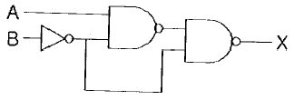
- X = AB
- X = A + B
- X = A'B + AB'
- X = AB + AB'
(정답률: 알수없음)
80. 다음은 전송품질의 척도인 명료도 등가 감쇠량(AEN)에 대하여 옳게 설명한 것은?
- 반복도를 기준으로 한 전송품질이다.
- AEN값이 정(+)이면 기준계보다 전송품질이 양호하고 부(-)이면 나쁘다.
- 시험 통화계와 AEN 결정용 기준계(SRAEN)의 명료도를 각각 구하고, 단음 명료도 80%에 대한 감쇠량의 차를 말한다.
- 요해도를 기준으로 한 전송품질이다.
(정답률: 알수없음)
증폭이득이 60[dB]이므로, 입력 신호의 1백만 배 이상의 출력 신호를 얻을 수 있습니다. 이를 위해서는 증폭기의 출력 전압을 1000배 이상 증폭해야 합니다.
증폭이득은 20[dB], 30[dB], 40[dB] 중 하나가 될 수 있습니다. 그러나, 20[dB]의 경우 출력 전압을 10배 증폭하면 26[dB]의 증폭이득을 얻을 수 있습니다. 따라서, 20[dB]의 부궤환을 걸어야 합니다.